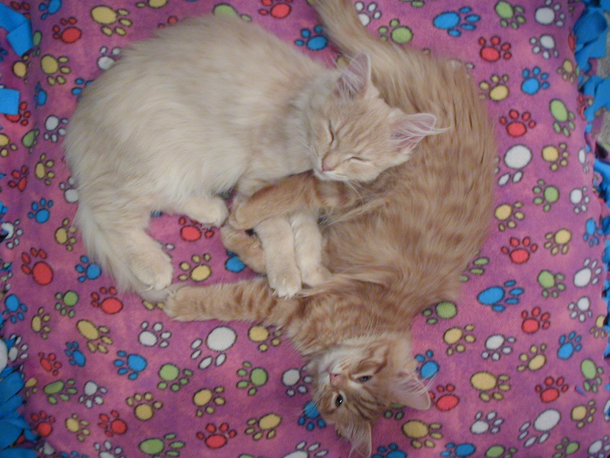

Zeno's Paradox.
Gravity was optional. So, most days, was dignity.




Paradox was the one who taught this house that a cat can be perfectly comfortable at any angle at all.
Upside down on the cat tree. Belly-up in a sunbeam, all four feet in different directions. Draped over the arm of a chair in a shape no spine should permit. If there was a right way up, she never found it, and never seemed to feel the loss.
Deep ginger, thoroughly fluffy, and enormously good-natured about the whole business of being a cat. She and Howl arrived together and did most things together, which is why they turn up in the same photographs so often.
The Name
Paradox carries the full weight of her name: Zeno's Paradox, the ancient Greek paradox of motion that argues a moving object can never reach its destination because it must first traverse half the distance, then half the remaining distance, and so on, infinitely. A perfect metaphor for a cat who can be at any angle at any time, seemingly defying the laws of physics and geometry. She is motion without endpoint, comfort without constraint, a living argument against the possibility of a single correct position.
- YEARS
- 2007–2025
- COAT
- Deep ginger, thoroughly fluffy
- EYES
- Amber
- KNOWN FOR
- Being comfortable at impossible angles
- SIGNATURE MOVE
- Upside down, eyes open, entirely unbothered
- FULL NAME
- Zeno's Paradox
- USUALLY WITH
- Howl
- GALLERY
- Wing 03 of the collection